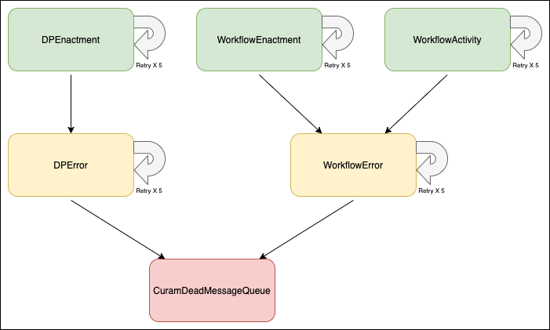

Introduction #
It would be unusual for JMS processing to fail; but, if messages do fail that is why we define retry counts, and error and dead message queues. There are two common contexts for JMS failures:
- Message production: messages to MQ from Liberty.
- Message consumption: message processing in Liberty for messages from MQ.
Message Production Failures #
If the production of a JMS message fails, a Java exception is thrown in Liberty (shown in the application server logs), the transaction fails, and the message is never processed by MQ.
For example, if an MQ queue fills up, the following exception would be seen in the stack trace. This points back to the issue in MQ and other related exceptions would identify the failing queue.
traces in the WebSphere Liberty log files:
Caused by: com.ibm.mq.MQException: JMSCMQ0001:
IBM MQ call failed with compcode '2' ('MQCC_FAILED') reason '2053' ('MQRC_Q_FULL').
Message Consumption Failures #
The JMS configuration for Cúram specifies a hierarchy of queues, from the normal queue, to an error queue, and, finally, to the dead message queue. Figure 1 illustrates this flow of JMS messages for SPM.

Figure 1: Cúram JMS queue message flow
JMS messages are usually handled within one of the three queues: DPEnactment, WorkflowEnactment, or WorkflowActivity; and, if necessary, are given up to five retry attempts, which is a configurable value in MQ (BOTHRESH(5)).
Should the message not succeed at that point it is routed to its associated error or exception queue as shown in the diagram - DPEnactment to DPError, and WorkflowEnactment/WorkflowActivity to WorkflowError.
At this point, Cúram, or custom error processing, can take over, depending on the message type and the configuration. Similarly, the error queues are defined to retry up to five times.
Should the error queue processing fail, the message is finally routed to the CuramDeadMessageQueue, specified as the MQ dead letter queue.
The message will remian there until it is either resent to its originating queue, or is deleted. How to do that is the subject of this document.
Normally, the only concern with respect to JMS message failures is what ends up in the dead message queue, since that represents work that should have been processed but wasn’t.
However, there are some error queue interventions that may be necessary, which are outside the scope of this document.
For more information about how Cúram Express Rules processing will transfer messages routed to the JMS error queue to batch, see Dependency Manager deferred processing in the Cúram Express Rules Reference Manual.
Cúram PDF documentation is available to download from Cúram Support Docs.
The dead message queue in MQ, QN.CURAMDEADMESSAGEQUEUE, should be monitored to ensure that messages are not failing to be processed, which should also be evidenced by Java exceptions in the Liberty logs, and a non-zero queue depth in MQ.
For instance, this MQSC command displays the current queue depth for the dead message queue:
DISPLAY QUEUE(QN.CURAMDEADMESSAGEQUEUE) CURDEPTH
There are a number of options for processing messages from QN.CURAMDEADMESSAGEQUEUE, provided by two MQ commands:
Important points to remember:
Note: When processing messages from QN.CURAMDEADMESSAGEQUEUE it's essential to be aware of the original queue that the message came from.
That is, messages from multiple queues can be routed to QN.CURAMDEADMESSAGEQUEUE and routing those messages incorrectly will result in additional errors. The dmpmqmsg command provides filtering options and the runmqdlg command provides a rules table.
Messages are processed as they arrive, with the exception of the dead message queue i.e, if messages from QN.CURAMDEADMESSAGEQUEUE are loaded into another queue, and they fail again, duplicate messages can appear, which can be confusing to resolve.
Therefore, it is recommended that the dead message queue is cleared before processing its contents.
Dead Letter Messages Example #
This is a simple example illustrating the processing of dead letter messages:
-
Unload the messages from the queue e.g., from the
QN.CURAMDEADMESSAGEQUEUEqueue in Queue Manager QM1:$MQ_INSTALLATION_PATH/dmpmqmsg -m QM1 -i QN.CURAMDEADMESSAGEQUEUE -f dead_messages.mqThis command would copy all of the messages on the queue into the specified file.
Replacing the
-ioption with-Iwould move the messages, leaving the queue empty.To selectively process messages, use the search option (-s), for instance:
$MQ_INSTALLATION_PATH/dmpmqmsg -m QM1 -I QN.CURAMDEADMESSAGEQUEUE -s QN.DPENACTMENT -dA -f DPENACTMENT.mq $MQ_INSTALLATION_PATH/dmpmqmsg -m QM1 -I QN.CURAMDEADMESSAGEQUEUE -s QN.WORKFLOWENACTMENT -dA -f WORKFLOWENACTMENT.mqThis would move the messages from the
QN.CURAMDEADMESSAGEQUEUEinto the specified files based on the filter. TheDISPLAY QUEUE(QN.CURAMDEADMESSAGEQUEUE) CURDEPTHcommand can now be used to confirm that all messages are accounted for. -
If the
-Ioption (or, optionally the-poption) wasn't used when running thedmpmqmsgcommand to clear the dead message queue as its contents were processed, that should be done now using the MQSC command, for instance:CLEAR QLOCAL (QN.CURAMDEADMESSAGEQUEUE) -
Once the original problem is resolved that caused the errors, reload the messages. For example, using the previous filtered example:
$MQ_INSTALLATION_PATH/dmpmqmsg -m QM1 -o QN.DPENACTMENT -f DPENACTMENT.mq $MQ_INSTALLATION_PATH/dmpmqmsg -m QM1 -I QN.WORKFLOWENACTMENT -f WORKFLOWENACTMENT.mq